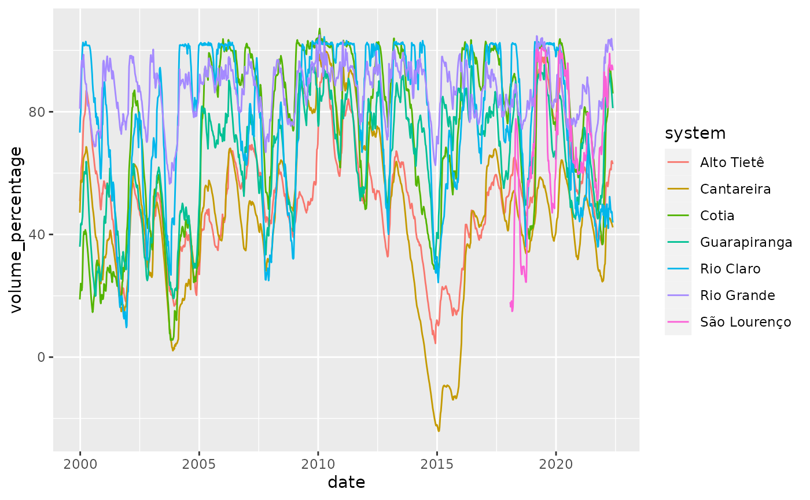

Getting started
Getting-started.Rmd
suppressPackageStartupMessages(library(tidymodels))
library(tft)
set.seed(1)
torch::torch_manual_seed(1)tft is an R implementation of Temporal Fusion Transformers (TFT) using the torch package. The Temporal Fusion Transformer is a neural network architecture proposed by Bryan Lim et al. with the goal of making multi-horizon time series forecasts for multiple time series in a single model.
The main difference between TFT and conventional forecasting methodologies is the way its architecture allows encoding different types of input data that can exist in forecasting problems. For instance, the model allows handling static covariates and time varying (known and unknown) differently.
TFT announcement shows promising benchmarks in forecasting performance for a variety of datasets.
The R package tft abstracts away the details of the architecture and provides an API that allows easy experimenting with the TFT architecture.
In this article we will create forecasts for the ?walmart_sales_weekly dataset included in the walmartdata package. This dataset has weekly sales of a sample of weekly sales by department of 45 retail stores. It also includes a few external predictors like the temperature, fuel price and the size of the store.
data(walmart_sales, package = "walmartdata")
dplyr::glimpse(walmart_sales)
#> Rows: 421,570
#> Columns: 16
#> $ Store <dbl> 1, 1, 1, 1, 1, 1, 1, 1, 1, 1, 1, 1, 1, 1, 1, 1, 1, 1, 1, …
#> $ Dept <dbl> 1, 1, 1, 1, 1, 1, 1, 1, 1, 1, 1, 1, 1, 1, 1, 1, 1, 1, 1, …
#> $ Date <date> 2010-02-05, 2010-02-12, 2010-02-19, 2010-02-26, 2010-03-…
#> $ Weekly_Sales <dbl> 24924.50, 46039.49, 41595.55, 19403.54, 21827.90, 21043.3…
#> $ Type <chr> "A", "A", "A", "A", "A", "A", "A", "A", "A", "A", "A", "A…
#> $ Size <dbl> 151315, 151315, 151315, 151315, 151315, 151315, 151315, 1…
#> $ Temperature <dbl> 42.31, 38.51, 39.93, 46.63, 46.50, 57.79, 54.58, 51.45, 6…
#> $ Fuel_Price <dbl> 2.572, 2.548, 2.514, 2.561, 2.625, 2.667, 2.720, 2.732, 2…
#> $ MarkDown1 <dbl> NA, NA, NA, NA, NA, NA, NA, NA, NA, NA, NA, NA, NA, NA, N…
#> $ MarkDown2 <dbl> NA, NA, NA, NA, NA, NA, NA, NA, NA, NA, NA, NA, NA, NA, N…
#> $ MarkDown3 <dbl> NA, NA, NA, NA, NA, NA, NA, NA, NA, NA, NA, NA, NA, NA, N…
#> $ MarkDown4 <dbl> NA, NA, NA, NA, NA, NA, NA, NA, NA, NA, NA, NA, NA, NA, N…
#> $ MarkDown5 <dbl> NA, NA, NA, NA, NA, NA, NA, NA, NA, NA, NA, NA, NA, NA, N…
#> $ CPI <dbl> 211.0964, 211.2422, 211.2891, 211.3196, 211.3501, 211.380…
#> $ Unemployment <dbl> 8.106, 8.106, 8.106, 8.106, 8.106, 8.106, 8.106, 8.106, 7…
#> $ IsHoliday <lgl> FALSE, TRUE, FALSE, FALSE, FALSE, FALSE, FALSE, FALSE, FA…To make the example faster to run, we are going to create models for the first 2 stores and first 2 departments.
walmart_sales <- walmart_sales %>%
filter(Store %in% c(1, 2), Dept %in% c(92, 95)) %>%
mutate(Store = as.factor(Store), Dept = as.factor(Dept))Preparing the data
The first thing we need to make sure is that our dataset doesn’t have implicit missing observations. This happens when an observations is just not present in the data instead of being explicitly marked with a NA. We are going to use tsibble functionality to add the implicitly missing observations, but you could use whatever tool you prefer for the task.
sales <- walmart_sales %>%
tsibble::tsibble(
key = c(Store, Dept),
index = Date
) %>%
tsibble::group_by_key() %>%
tsibble::fill_gaps(
Weekly_Sales = 0,
IsHoliday = FALSE
) %>%
tidyr::fill(Size, Temperature, Fuel_Price, CPI, Unemployment, .direction = "down")
feasts::autoplot(sales, Weekly_Sales)
#> `mutate_if()` ignored the following grouping variables:
#> • Columns `Store`, `Dept`
We will also split the full dataset in 3 parts - training, validation and testing. We use the last 24 weeks of data for validation/testing - using 16 for validation and 8 of them for testing.
last_date <- max(sales$Date)
sales_train <- sales %>% filter(Date <= (last_date - lubridate::weeks(24)))
sales_valid <- sales %>% filter(Date > (last_date - lubridate::weeks(24)),
Date <= (last_date - lubridate::weeks(8)))
sales_test <- sales %>% filter(Date > (last_date - lubridate::weeks(8)))Now that the data is prepared we will create a preprocessing pipeline using the recipes package. This recipe will allow handling missing values and normalization of covariates - which is very important in neural network models. It also adds a few covariates that are recommended by the paper authors like time_since_begining and categoricals for month and week in the year.
rec <- recipe(Weekly_Sales ~ ., data = sales_train) %>%
step_mutate(
time_since_begining = as.numeric(difftime(
time1 = Date,
time2 = lubridate::ymd(min(sales$Date)),
units = "weeks"
)),
date_week = as.factor(lubridate::week(Date)),
date_month = as.factor(lubridate::month(Date)),
IsHoliday = as.factor(IsHoliday)
) %>%
step_impute_median(starts_with("MarkDown")) %>%
step_normalize(all_numeric_predictors())Specifying the covariates
Like we said earlier, TFT allows encoding covariates differently in the architecture. There are 5 possible ways tft can treat columns in the dataset that we summarise below:
- ‘index’: is a single date column that specifies at which point in time the observation refers to. This is not directly used by the model itself, but is used internally to create rolling windows and order observations.
- ‘key’: are groups of columns that identify a single time series. Keys are necessary if you are creating predictions for multiple time series in a single model. By default, ‘keys’ are also considered ‘static’ predictors by the model.
- ‘static’: predictors are considered ‘static’ when they don’t vary over time, they are information from the time-series, like a region or a kind of product.
- ‘unknown’ are predictors that vary over time but we only know values observed for past observations. For example, you can use the daily temperature as a predictor, but you only know it for past observations.
- ‘known’ are predictors that vary over time and are known even for future observations. For example, the day of the week can be used as a predictor for a daily time series, and it’s known for every time step, no matter if it’s from past or future.
To specify the role of each covariate in the model we use the tft_dataset_spec() function. This interface has a similar intent as recipes (in tidymodels), ie. it allows you to reproduce the same preprocessing to a different dataset later - which is useful when you want to create forecasts.
Also part of the dataset specification is the history size the model will use to make predictions and the size of the horizon (ie how many time-steps ahead) we want to generate predictions. Consider the following diagram to represent the time series
Time series
tft feeds data to the model in slices that have a fixed history size, that we call lookback and a fixed number of timesteps ahead that we are calling horizon. Those are represented in the diagram below:

Slices
Now lets create the tft dataset specification. We don’t need to manually specfy the unknown covariates as, unmentioned variables are automatically treated as such.
spec <- tft_dataset_spec(rec, sales_train) %>%
spec_covariate_index(Date) %>%
spec_covariate_keys(Store, Dept) %>%
spec_covariate_static(Type, Size) %>%
spec_covariate_known(starts_with("MarkDown"), time_since_begining,
starts_with("date_"), IsHoliday)The print method for spec shows useful information about the specification:
spec
#> A <tft_dataset_spec> with:
#>
#> ✖ `lookback` and `horizon` are not set. Use `spec_time_splits()`
#>
#> ── Covariates:
#> ✔ `index`: Date
#> ✔ `keys`: <list: Store, Dept>
#> ✔ `static`: <list: Type, Size>
#> ✔ `known`: <list: starts_with("MarkDown"), time_since_begining, starts_with("date_"), and IsHoliday>
#> ! `unknown` is not set. Covariates that are not listed as other types are considered `unknown`.
#>
#> ℹ Call `prep()` to prepare the specification.Here we see that we didn’t specify the lookback and horizon, so let’s add it to the spec. The lookback usually works like any other hyperparameter and we in general choose values between 10 and 200 depending on the time series period. Horizon is chosen to statisfy business needs, ie. if you want to have predictions for 4 weeks ahead, you should choose that.
spec <- spec %>%
spec_time_splits(lookback = 52, horizon = 4)We now execute prep to prepare the spec:
spec <- prep(spec)
spec
#> A <prepared_tft_dataset_spec> with:
#>
#> ✔ lookback = 52 and horizon = 4.
#> ✔ The number of possible slices is 256
#>
#> ── Covariates:
#> ✔ `index`: Date
#> ✔ `keys`: Store and Dept
#> ✔ `static`: Type and Size
#> ✔ `known`: MarkDown1, MarkDown2, MarkDown3, MarkDown4, MarkDown5, time_since_begining, date_week, date_month, and IsHoliday
#> ✔ `unknown`: Temperature, Fuel_Price, CPI, and Unemployment
#> ℹ Variables that are not specified in other types are considered `unknown`.
#>
#> ℹ Call `transform()` to apply this spec to a different dataset.The print method now shows the name of all variables that will be used in the model and their role. Also shows information about the number of slices that will be used.
Fitting the model
We will now fit our model. To that we first initialize the a model with:
model <- temporal_fusion_transformer(spec, hidden_state_size = 128)
model
#> <luz_module_generator>model is a luz module, thus you can use luz workflows to train the model. For an example, you can use the lr_finder function to find the best learning rate for your model.
result <- luz::lr_finder(
model,
transform(spec, sales_train),
end_lr = 1,
dataloader_options = list(
batch_size = 64
),
verbose = FALSE
)
plot(result) + ggplot2::coord_cartesian(ylim = c(0.15, 0.5))
This allows us to choose a learning rate. We will start with 1e-3. Let’s redefine the model now fixing the learning rate:
model <- temporal_fusion_transformer(spec, hidden_state_size = 128,
learn_rate = 1e-3)We can then fit the model using fit. Since model is a luz module we are mainly calling ?fit.luz_module_generator here, so all arguments apply.
fitted <- model %>%
fit(
transform(spec, sales_train),
valid_data = transform(spec, new_data = sales_valid),
epochs = 100,
callbacks = list(
luz::luz_callback_keep_best_model(monitor = "valid_loss"),
luz::luz_callback_early_stopping(
monitor = "valid_loss",
patience = 10,
min_delta = 0.001
)
),
verbose = FALSE
)
plot(fitted)Once we are happy with the results of our model we can make predictions. The model we have trained can make predictions for 4 weeks ahead, but our test set has 8 weeks ahead. In order to validate the model, we are going to create 2 test sets and then combine the metrics. This is what the rolling_predict function does, so we don’t need to manually implement this:
preds <- rolling_predict(
fitted,
past_data = dplyr::bind_rows(sales_train, sales_valid),
new_data = sales_test
)
preds
#> # A tibble: 2 × 3
#> past_data new_data .pred
#> <list> <list> <list>
#> 1 <tibble [208 × 16]> <tibble [16 × 16]> <tibble [16 × 3]>
#> 2 <tibble [208 × 16]> <tibble [16 × 16]> <tibble [16 × 3]>The return value of rolling_predict is a tibble containing the past_data, new_data and .pred (predictions) for each slice that was made in the test data.
We can make a plot of predictions along with the historical data used for creating the predictions and the observed values.
preds %>%
rowwise() %>%
summarise(
past_data %>%
bind_rows(bind_cols(new_data, .pred)) %>%
mutate(.pred_at = max(past_data$Date))
) %>%
ggplot(aes(x = Date)) +
geom_point(aes(y = Weekly_Sales)) +
geom_line(aes(y = Weekly_Sales)) +
geom_point(aes(y = .pred), color = "red") +
geom_line(aes(y = .pred), color = "red") +
facet_grid(Store + Dept ~ .pred_at, scales = "free")
#> Warning: Removed 416 rows containing missing values (geom_point).
#> Warning: Removed 52 row(s) containing missing values (geom_path).
To create predictions for future data, that we don’t yet have the target, we can use predict. For example:
future_data <- walmartdata::walmart_sales_test %>%
filter(Store %in% c(1, 2), Dept %in% c(92, 95)) %>%
mutate(Store = as.factor(Store), Dept = as.factor(Dept)) %>%
filter(Date <= (max(sales$Date) + lubridate::weeks(4)))
pred <- predict(
fitted,
new_data = future_data,
past_data = sales
)We can then show the predictions in a plot:
sales %>%
filter(Date >= lubridate::ymd("2012-01-01")) %>%
bind_rows(bind_cols(future_data, pred)) %>%
ggplot(aes(x = Date)) +
geom_point(aes(y = Weekly_Sales)) +
geom_line(aes(y = Weekly_Sales)) +
geom_point(aes(y = .pred), color = "red") +
geom_line(aes(y = .pred), color = "red") +
facet_grid(Store ~ Dept, scales = "free")
#> Warning: Removed 16 rows containing missing values (geom_point).
#> Warning: Removed 4 row(s) containing missing values (geom_path).
#> Warning: Removed 172 rows containing missing values (geom_point).
#> Warning: Removed 43 row(s) containing missing values (geom_path).